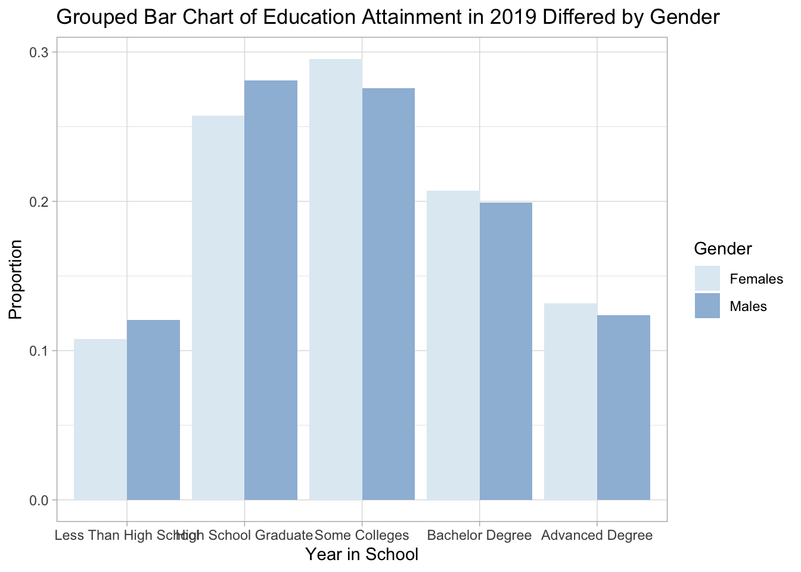
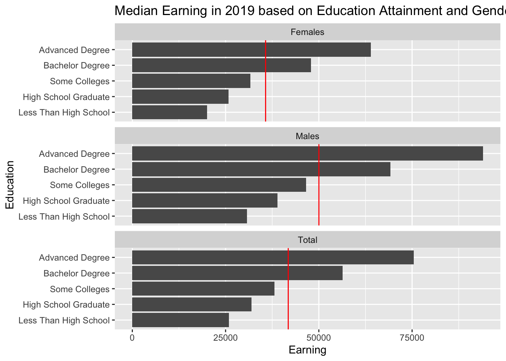

Chapter 5 Results
##
## Attaching package: 'gridExtra'## The following object is masked from 'package:dplyr':
##
## combine## Loading required package: grid##
## Attaching package: 'ggmosaic'## The following objects are masked from 'package:vcd':
##
## mosaic, spineedu2019<- education[education$Year==2019,]
edu2019%>%
group_by(Gender)%>%
mutate(total_pop = sum(Estimate))%>%
ungroup()%>%
ggplot()+
geom_col(aes(x = Education,y=Estimate/total_pop, fill = Gender), position="dodge" )+
xlab("Year in School") +
ylab("Proportion")+
ggtitle("Grouped Bar Chart of Education Attainment in 2019 Differed by Gender")
#科学计数法
race_total <- race[race$Gender=="Total",]
ggplot(race_total)+
geom_col(aes(x=Race,y=Estimate,fill=Education),position ="dodge")+
xlab("Race")+
ylab("Population")+
ggtitle("Group Bar Chart of 2019 Education Attainment by Race")+
theme(axis.text.x = element_text(angle=20, vjust=0.5))
race_gender <- race[race$Gender !="Total",]
#mosaic plot: x = race, y = gender, facet by education
race_gender <- race_gender[race_gender$Education != "Total",]## # A tibble: 20 x 4
## Gender Race Education Estimate
## <chr> <fct> <fct> <int>
## 1 Males White Alone High School or higher 65002939
## 2 Males White Alone >= Bachelor Degree or higher 25550556
## 3 Males Hispanic or Latino Origin High School or higher 12088356
## 4 Males Hispanic or Latino Origin >= Bachelor Degree or higher 2791429
## 5 Males Black Alone High School or higher 10831809
## 6 Males Black Alone >= Bachelor Degree or higher 2481765
## 7 Males Asian Alone High School or higher 5515960
## 8 Males Asian Alone >= Bachelor Degree or higher 3553501
## 9 Females White Alone High School or higher 69553398
## 10 Females White Alone >= Bachelor Degree or higher 27611361
## 11 Females Hispanic or Latino Origin High School or higher 12535290
## 12 Females Hispanic or Latino Origin >= Bachelor Degree or higher 3372669
## 13 Females Black Alone High School or higher 12968072
## 14 Females Black Alone >= Bachelor Degree or higher 3682301
## 15 Females Asian Alone High School or higher 6231119
## 16 Females Asian Alone >= Bachelor Degree or higher 3881347
## 17 Females Other >= Bachelor Degree or higher 1795566
## 18 Females Other High School or higher 6324225
## 19 Males Other >= Bachelor Degree or higher 1492932
## 20 Males Other High School or higher 6134805#男女比例
#check value
ggplot(race_gender) +
geom_col(aes(x = fct_rev(Race),y=Estimate, fill = Gender), position = "fill") +
xlab("Race") +
theme(legend.position = "bottom") +
coord_flip()+
guides(fill = guide_legend(reverse = TRUE)) +
facet_wrap(~Education, ncol = 1) +
ylab("proportion") +
ggtitle("Proportional breakdown of Gender for each race, faceted on Education Attainment")
#add legend！！！
earning2019 <- earning[earning$Year==2019,]
earning_total<- earning2019$Earning[earning2019$Education=="Total"]
earning2019 <- earning2019[earning2019$Education!= "Total",]
earning2019%>%
group_by(Education)%>%
mutate(total_earn =earning_total )%>%
ungroup()%>%
ggplot()+
geom_col(aes(x=Education,y=Earning))+
geom_hline(aes(yintercept=total_earn),col="red")+
coord_flip()+
facet_wrap(~Gender, ncol = 1) +
ggtitle("Median Earning in 2019 based on Education Attainment and Gender")
#change birth csv file
#title
#check value
ggplot(birth) +
geom_col(aes(x = as.factor(Marriage), y = Estimate, fill = fct_rev(Education)), position = "fill")+
coord_flip() +
theme_light(15)+
theme(legend.position = "bottom") +
guides(fill = guide_legend(reverse = TRUE)) +
scale_fill_discrete(name = "Education")+
theme(legend.title = element_text(size = 7),legend.text = element_text(size=7))+
facet_wrap(~Give_birth, ncol = 1)+
ylab("proportion") +
xlab("Marriage Status")+
ggtitle("2019 Proportional breakdown of education attainment on \n marriage status,faceted on giving birth or not")
#one title
#y label too small
new_states<-states %>%
group_by(State)%>%
mutate(bachelor_higher = (Population[Education=="Bachelor Degree"]+Population[Education=="Advanced Degree"])/Population[Education == "Total"])%>%
mutate(abb = state2abbr(State))%>%
mutate(median_earning = Earning[Education=="Total"])%>%
ungroup()
new_states$abb[is.na(new_states$abb)]="PR"
ba_rate<-ggplot(new_states)+
geom_point(aes(x=bachelor_higher, y=reorder(abb, bachelor_higher)), color = "blue") +
xlab("Rate of Bachelor Degree or Higher")+
ylab("State")+
ggtitle("2019 Rate of Bachelor Degree or Higher for Each State")+
theme_light()
earnings <-
ggplot(new_states)+
geom_point(aes(x=median_earning, y=reorder(abb,bachelor_higher)), color = "red") +
xlab("Median Earning of the State")+
ylab("State")+
ggtitle("2019 Median Earning for Each State")+
theme_light()
grid.arrange(ba_rate, earnings, ncol=2)